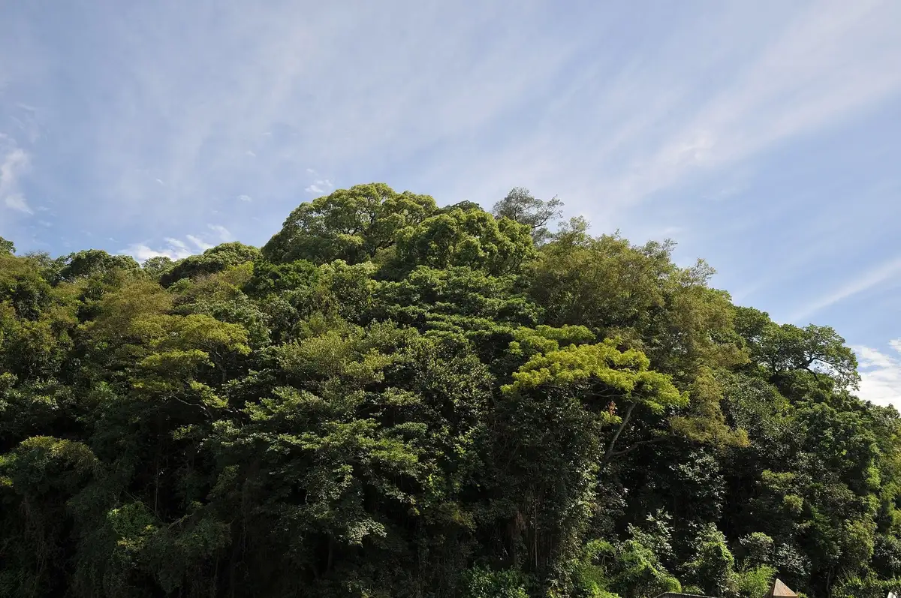
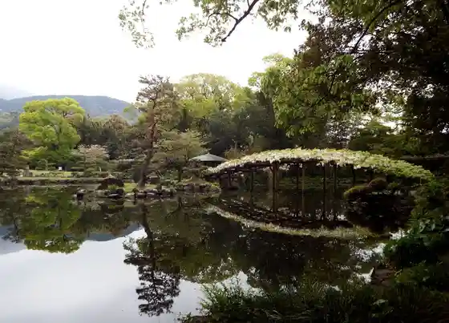
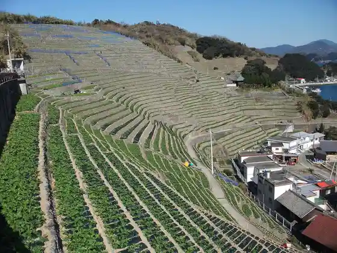
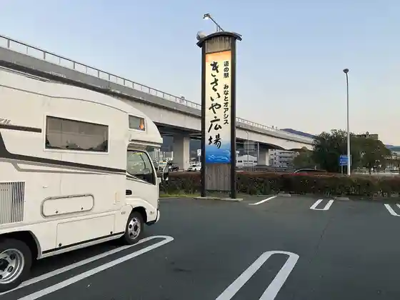
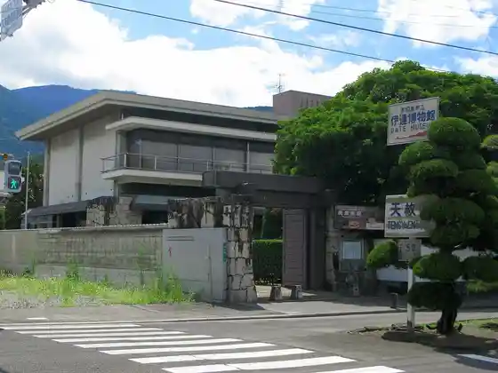

Uwajima
Uwajima · Ehime
Uwajima
Highlighted on the Ehime map.

Stay
JR Hotel Kuremento Uwajima
Uwajima Orientaru Hotel
Uwajima Taminaru Hotel
Uwajima Riijiento Hotel
Hotel CORAL (Koraru) Uwajima
Hotel Ishibashi
Tennen Onsen Keiryu Katsu Toko Baths Supa Hotel Uwajima Ekimae Tennen Onsen
Guest House GO-HIGHTAKA
Tsuribitogatsudo Yado Reja Minshuku Saiyu Ryo Center
Dining
ASAHI Shokudo
Yakitori Tori Sho
Kyo
kitchen sola
Sumibi Yakitori Goen
Shabushabu Onyasai Uwajima Mise
Kuniyasu
Shokuji Tokoro Naniwa
Miyoshi Shokudo
Uwajima Kankojoho Center Shiroshita
Pateishie · Do · Poruto
Resutoran Konishi
Heri Asa Ratsu Yu Uwajima
Marugame Seimen Uwajima Mise
DINING BAR TRE-TRE
Hisashi Tei Yume Tsushima Mise
Onsen
Uwajima Orientaru Hotel Public Bath
Uwajima Daiichi Hotel Daiichi Baths
Hotel CORAL (Koraru) Uwajima Public Bath
Hotel Ishibashi Otokoyu Onsen
Tennen Onsen Keiryu Katsu Toko Baths Supa Hotel Uwajima Ekimae Tennen Onsen Danjobetsu Tennen Onsen
Sights
Uwajima Shiro
Tensha Sono

Yuko Mizu Ka Ura no Dambata

Roadside Station Minato Oashisu Uwajima Kisaiya Plaza

Uwajima Ritsu Date Museum
